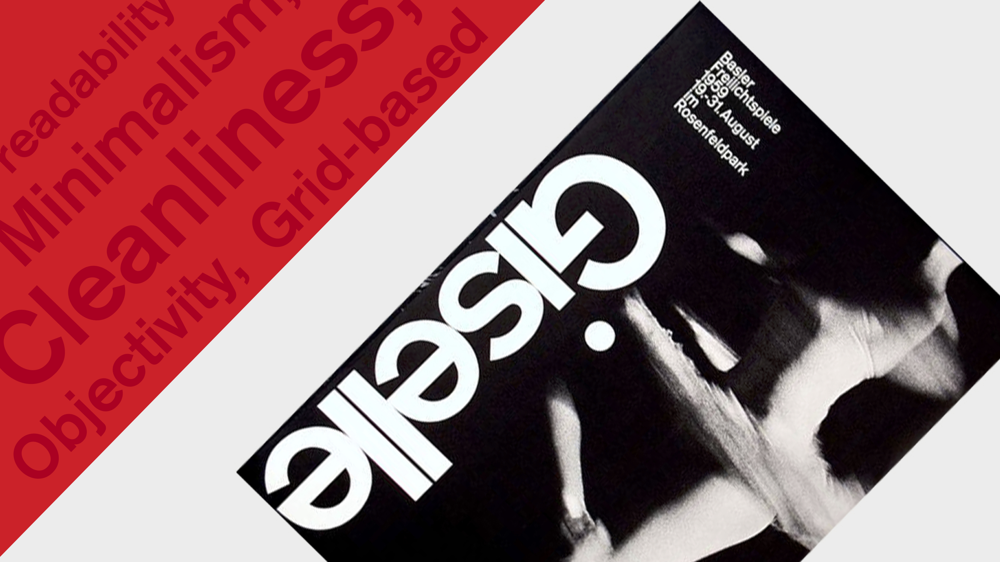

Stilartsite om Swiss Style
introduktion
Målet ved dette projekt var at sætte en hjemmeside op, ved anvendelse af formateringssprog (Html og CSS). Det har jeg gjort udfra stilarten "Swiss Style", som jeg beskrevet og prøvet at skabe et visuelt udtryk som repræsentere stilarten bedst muligt.
Under dette tema, "Grundlæggende webdesign", er jeg blev introduceret til faglige begreber indenfor web content, digital kommunikation, design af brugergrænseflader og responsivt webdesign. Disse egenskaber har alle brugt til at fremstille min endelige stilartsite.
endelige ikon
moodboard
